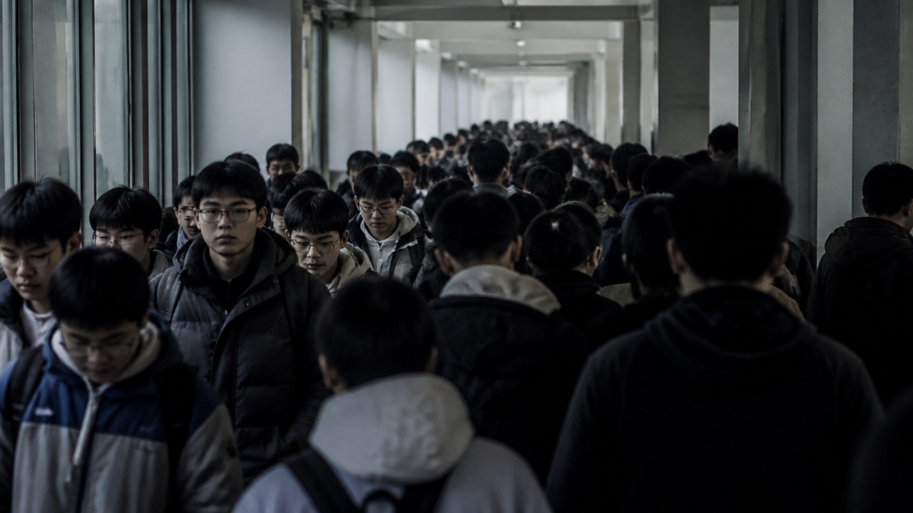
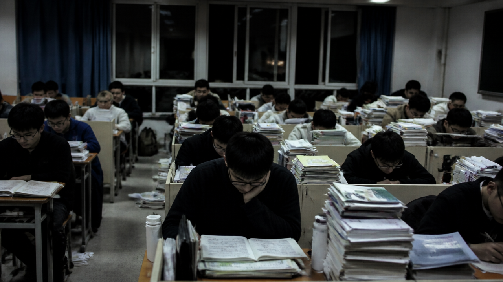

第三部分
差异的底层逻辑
出生人口、高考报名人数与区域竞争格局
按照 18 岁参加高考的常规逻辑，历年高考报名人数应与 18 年前的出生人口高度相关。数据显示，2000 年全国出生人口 1778 万人，对应 2018 年高考报名人数 975 万人；2007 年出生人口 1594 万人，对应 2035 年高考报名人数 1335 万人。
2000-2017 年，全国出生人口从 1778 万人下降至 1594 万人，降幅近 10%
但对应年份的高考报名人数却从 975 万人上涨至 1335 万人，涨幅近 37%
这一矛盾的核心，在于两个关键指标的变化：
首先是高中入学率的持续上涨。2018-2025 年，全国高中阶段毛入学率从 88.8% 上涨至 92%（数据来源：教育部门户网站），越来越多的初中毕业生进入高中，获得了参加高考的资格，直接扩大了高考报名人数的基数；

然后是复读率的大幅提升：2018-2025 年，全国高考复读生占比持续上升，部分高考大省的复读生占比甚至超过 25%。越来越多的学生担心第一学历不足从而选择复读，进一步推高了历年高考报名人数，也加剧了各省高考的竞争激烈程度。

据预测
2026-2035 年，全国高考报名人数仍将保持在 1340 万人以上的高位
高考竞争的激烈程度，在近 10 年内很难出现根本性缓解
高考竞争的核心是省内排名为主
高校于各省名额的分配不均，是导致区域竞争格局固化、高考大省内卷加剧的核心原因
2024 年，全国 985 高校招生计划中，北京、天津、上海三个直辖市本身拥有的 985 高校资源共占全国近三分之一，而这三个直辖市的高考报名人数处于较低水平；与之相对的是，河南、河北、广东等高考人口大省 985 高校资源明显少于上述直辖市地区，呈现出明显的结构性问题。
高校资源的分配不均，也印证了各省高考录取难度的天差地别：北京市的 985 录取率，是河南省的 3.8 倍、河北省的 4.4 倍；天津市的 985 录取率，是山东省的 3.5 倍、江西省的 6 倍。
对于高考大省的学生来说，想要考上同一所 985 高校，省内排名需要进入 1%，而直辖市的学生仅需进入前 5%。这种录取难度的巨大差异，让高考大省的学生陷入了「我必须用更多的时间，才能弥合录取难度的差距」的内卷焦虑中。
最终形成了 「学习时长越卷，录取率越低，焦虑越严重，身心健康越差」 的恶性循环。